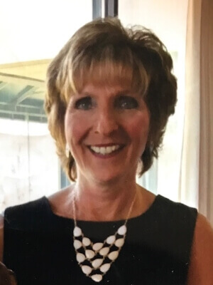
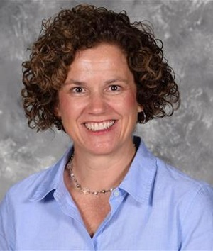
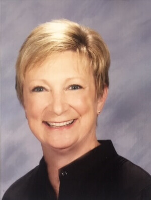
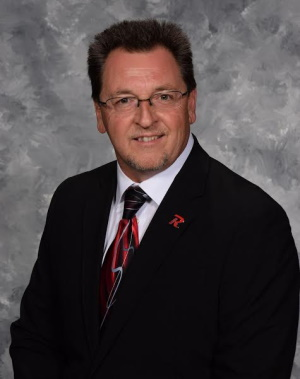
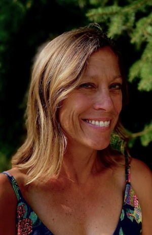
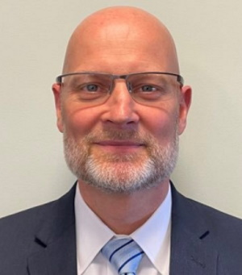

Revere Power Pack Program
a 501(c)3 Organization
Meet Our Board Members
Jennifer G. (“Jill”) OHara President, Treasurer
Jill grew up in Bath and graduated from Revere Schools. She graduated from The University of Akron with a BS in Education.
Children have always been a major focus in her life. Jill recently retired from teaching in the Nordonia Hills City Schools, spending most of the years teaching Kindergarten at Northfield Elementary. She was the Nordonia Hills Educators’ Teacher of the Year in 2006-2007. Jill continues to serve as a volunteer for the kindergarten classrooms at Northfield Elementary and occasionally substitutes there.
She was the Vice-President of Governmental Affairs for the Adam Walsh Child Resource Center when it was located in Cleveland and served as the Board’s Liaison to the Florida Board. She also testified in Columbus for Senate Bill 321, known as the “Ohio Missing Children’s Bill.” She also was a former Sunday School Teacher at Grace United Church of Christ where she currently serves as a member of the consistory.
A long time equestrian, Jill competes with her American Saddlebred and serves on the board of the American Saddlebred Horse Association of Ohio. She has twin children, Kaitlin and Ryan, who graduated from the Revere Schools as well. She lives in Bath with her husband, Brian, and their two dogs.

Vitina D. Bednar, Vice-President
Tina is a graduate of The University of Akron. She retired from Akron Public Schools as an elementary teacher after 35 years of service. Her husband’s name is Rick Bednar. They have two sons, Phillip and Steven. They have two grandchildren, Bryce and Taylor.

Marjorie attended The University of Iowa where she received a Bachelor of Business Administration degree with a Major in Finance in 1987. She also earned her MBA from Drake University in 1991. Marjorie worked as a business/financial analyst in the healthcare industry in Iowa and Wisconsin prior to having children.
Marjorie Dye, Corresponding Secretary
Marjorie attended The University of Iowa where she received a Bachelor of Business Administration degree with a Major in Finance in 1987. She also earned her MBA from Drake University in 1991. Marjorie worked as a business/financial analyst in the healthcare industry in Iowa and Wisconsin prior to having children.
Marjorie and her husband, Tim, have been residents in the Bath community since 2009 and have had four children graduate from Revere. She has been very involved in Revere PTAs holding the positions of President, Vice President and Treasurer in the various PTAs. She has also volunteered in the activities that her children were involved in including Revere athletics, Revere Minuteman band, Boy Scouts, and Girl Scouts. She is also active in her church, Montrose Zion United Methodist Church, and is currently the treasurer.
Currently, Marjorie is a secretary at Revere Middle school and is honored to continue to serve children through the Revere Power Pack Board.

Renee A. Zumpano, Recording Secretary
Renee Zumpano is a lifelong Akron resident and a graduate of the University of Akron. She is a present member of the Board of Trustees of the Bath Volunteers for Service, and served as President in 2015. Her charitable service has included committees that served the Revere School District, the Homebuilders Association serving Portage and Summit Counties, and Rebuilding Together of Northeast Ohio. She is currently employed by Zumpano Design and Construction.

Gretchen was the President of Burt Greenwald Chevrolet, Inc. She retired in 2009 after 35 years in the retail automotive industry.
Gretchen G. March, Assistant Treasurer
Gretchen was the President of Burt Greenwald Chevrolet, Inc. She retired in 2009 after 35 years in the retail automotive industry.
She has been a resident of Bath Township most of her life. She attended Bath Elementary School and Eastview Junior High, graduating from Revere High School, Class of 1969.
Gretchen studied at Case Western Reserve and graduated from The University of Akron with a B.S.degree in Medical Technology, working in this field in the Chemistry Department at Akron City Hospital (now Summa Systems) before turning her attention and interests towards the family business, Burt Greenwald Chevrolet, Inc.
Her internship in the automotive retail arena began in 1974, as she rotated through the various departments gaining hands-on experience. In 1985 she became the General Manager and by 1988 she assumed the position of dealer/operator.
The business was sold in 2009, marking the beginning of retirement and new opportunities.
She has been married 35 years and she and her husband, Harter, currently live in Bath.

Michael and his family moved to Bath in 2003, wife : Laura and sons Ryan and Nicholas. Michael and Laura were members of RMPA while their sons attended RMS and RHS.
Michael Critchfield
Michael and his family moved to Bath in 2003, wife : Laura and sons Ryan and Nicholas. Michael and Laura were members of RMPA while their sons attended RMS and RHS.
Michael worked in the Akron Public School District for 32 years serving 22 years as the Coordinator of Buildings and Grounds Services Department. Michael came to Revere Local School District in April of 2014 serving as the district's Facilities and Maintenance Supervisor.
Steve Hendricks
Steve is Commercial Lending Manager for the Akron, Canton, Firelands Region at Premier Bank. He has over 35 years of commercial banking and finance and specializes in owner managed businesses and commercial real estate.
Steve is graduate of Ohio University with a B.A. in Business Administration with a double major in finance and Quantitative Business Analysis. Steve serves on the Board of Trustees and as Treasurer and an Executive Committee Member for the Akron Area YMCA, past board Chair of the American Red Cross, a campaign volunteer for The United Way of Summit County, Member of Leadership Akron, Class 25. He was awarded the H. Peter Burg Community Leadership Award in March of 2020.
He has been married to his high school sweetheart for 35 years. They have two children and two grandchildren. Steve has a passion for boating and enjoys spending his free time out on the water.
Seth M. Jentner
Seth Jentner, CFP® is the Director of Operations for Jentner Wealth Management where he manages Jentner’s operational functions, utilizing new technologies to better serve clients. He has extensive experience in process optimization, which he continually applies to enhance the quality of Jentner’s business operations. Seth develops new ways for the Jentner team to communicate with clients and adopts new financial technologies that keep Jentner Wealth Management on the cutting edge. Seth also analyzes client data and serves as an advisor to clients.
Seth received his CERTIFIED FINANCIAL PLANNER™ certification in 2012 and obtained a Master of Business Administration from Indiana University’s Kelley School of Business in 2010. Prior to joining the Jentner team, he worked as an engineer for the Goodyear Tire and Rubber Company throughout Europe and the U.S. He graduated summa cum laude from the University of Akron in 2001 with a Bachelor of Science in chemical engineering and a minor in entrepreneurship. Seth speaks French and German fluently.

Betsy Riley grew up in Bath and graduated from Revere High School. She attended Valparaiso University and received a Bachelor in Arts with a degree in Spanish and Sociology. Following graduation, she moved to Chicago and worked at Smith, Bucklin and Associates working in non-profit association management. Betsy also worked as an independent contractor doing freelance meeting and event planning.
Betsy Riley
Betsy Riley grew up in Bath and graduated from Revere High School. She attended Valparaiso University and received a Bachelor in Arts with a degree in Spanish and Sociology. Following graduation, she moved to Chicago and worked at Smith, Bucklin and Associates working in non-profit association management. Betsy also worked as an independent contractor doing freelance meeting and event planning.
After reconnecting with her husband Mike, who is also a Revere grad, in Chicago, they moved back to Akron area to raise their family. Betsy worked as an Account Manager at Hitchcock Fleming & Associates advertising agency providing support to Goodyear’s distributors until her girls were born.
While staying home to raise their girls, Betsy continues to spend much of her time volunteering. Betsy has been involved with many school volunteer jobs, as well as holding different positions within the PTA.
She was involved with the 2020 Revere Local School’s Vision of a Minuteman as well as the strategic planning for the Revere district’s five-year plan. Betsy currently volunteers at Akron Children’s Hospital in the surgery waiting room. She also loves to spend time with their family dog, Murphy, who is a certified therapy dog. They are a part of the ACH Doggie Brigade and also visit many other facilities in the area. In between her volunteer opportunities, Betsy helps by subbing in the Revere Schools.
In her free time, she enjoys cooking, traveling, reading a good book and watching their girls participate in their many extracurricular activities.

Michael Tefs, Ed.D. has served public education for nearly 30 years, 14 years leading school systems as a Superintendent/CEO. An educator at heart, he began his career teaching science after graduating from Baldwin-Wallace University, Berea, Ohio.